CKA Note Section 7 Security
Contents
135. Authentication
139. TLS in Kubernetes
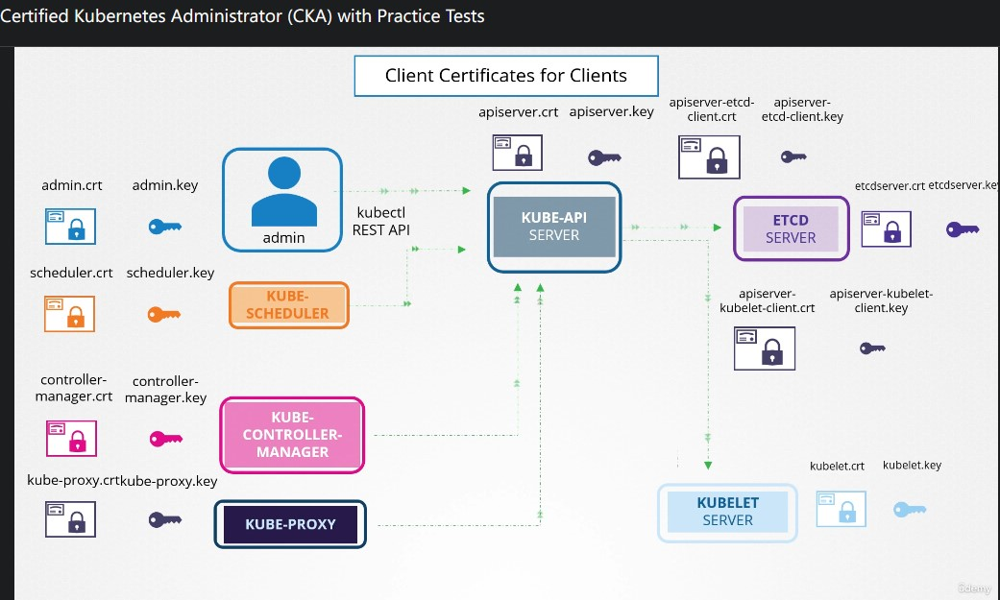
▲ 各個 K8s component 的 TLS community diagram。
因為現在大部分 kube-proxy 都不是單獨安裝，已經變成 daemondset，所以官方 docs 才沒有找到關於它的 certificate。在這個情況下可以用 serviceaccount 與 secret 傳入 daemondset 來達成需求。(謝謝 hwchiu)
記住一件事: 只要是 apiserver 的 client，取得授權 (Authorization) 方式就是在證書上加上 group 資訊 (例如: /O=system:masters)
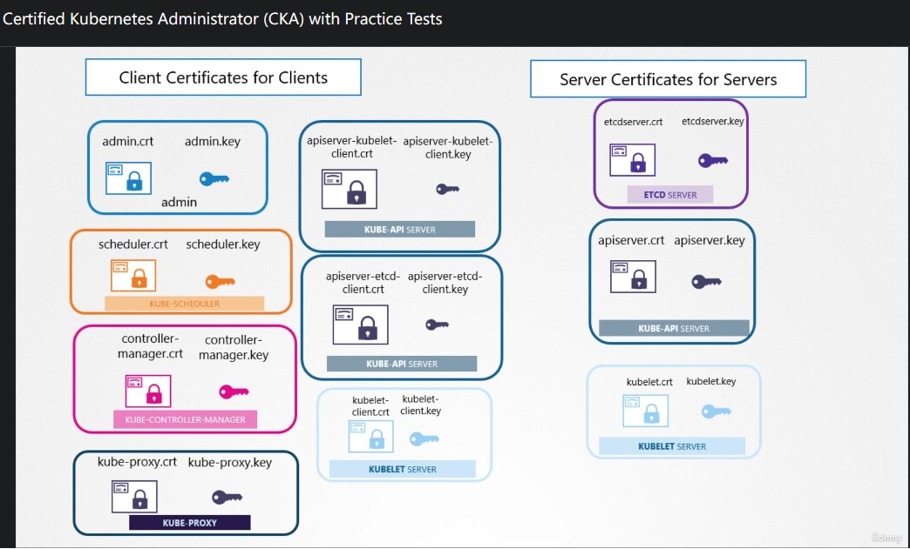
▲ 以 client side 與 server side 做分類。
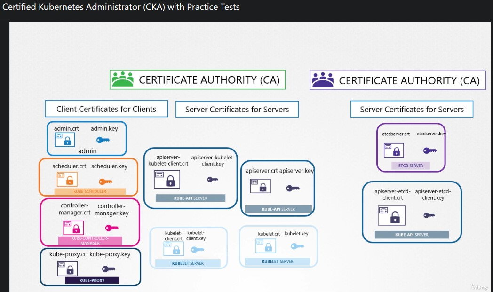
▲ 這些證書 (certifications) 可以是單個 CA 簽署的，也可以是多個 (如果對 TLS 有一定程度理解的話，這句是廢話)。
140. TLS in Kubernetes - Certificate Creation
謝謝這個章節再次幫我複習有關 TLS certification 的一些知識~
[DigitalOcean 解釋 .csr] OpenSSL Essentials: Working with SSL Certificates, Private Keys and CSRs
以 Linux 來說，最常被用來處理 TLS certification 的工具就是 openssl，預設並沒有 bash completion 很不方便!
|
|
[TLS] 產生 Certificate Authority (CA) 所需
|
|
[TLS] 產生 Admin User 所需
|
|
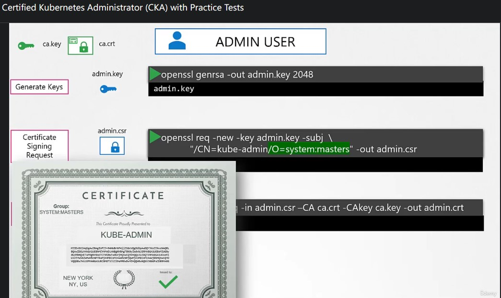
▲ 在產生 admin user 時，必須在 Organization 填入 system:masters。K8s 抓取這個欄位作為 group (授權用)。
[TLS] 產生 scheduler 所需
同樣是屬於 apiserver 的 client，可以比照 Admin user 產生。
|
|
[TLS] 產生 controller-manager 所需
|
|
因為 controller-manager 屬於 system component 所以證書上面的 CN 必須加 system:
[TLS] 產生 Kubelet (server side + client side) 所需
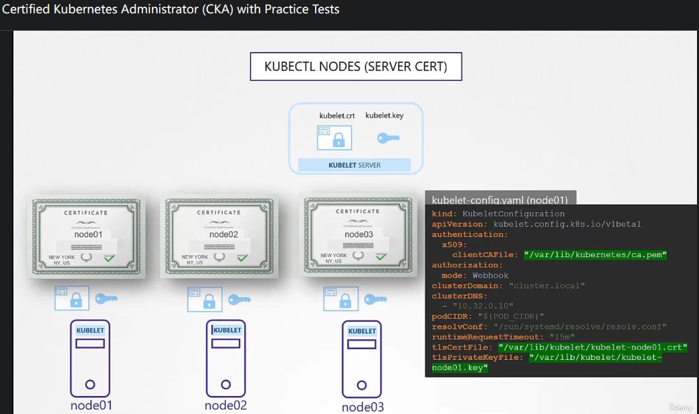
▲ kubelet 是在各個 worker node 上，負責跟 apiserver 溝通的元件。
每個 worker node 都有屬於自己的證書 (certificate)，上面都有寫名子。kubelet-config.yaml 會需要這些資訊~
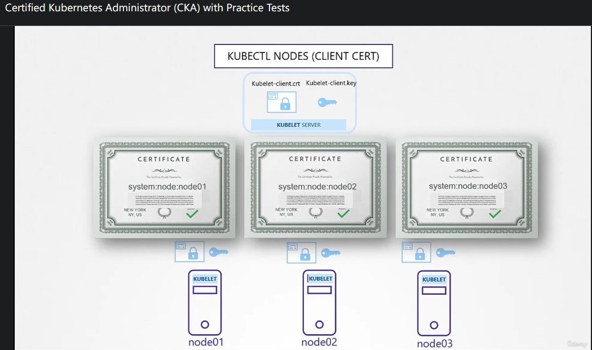
▲ 上面有講到 kubelet 需要跟 apiserver 做溝通 (彙報目前 pod 的狀態… etc)，所以理所當然也需要一組 key pair。
因為是 system component，所以必須在證書上加上 group 資訊 (/O=system:node) 用於(被)授權 (Authorization)
|
|
[TLS] 產生 Kube API server 所需
|
|
openssl.cnf
因為 api-server 是一座 Kubernetes cluster 的核心，什麼事情都會經過 api-server 所以它的 TLS certification 內容包含的也更多，因此會習慣把這些內容打成 OpenSSL config 直接餵進去比較快。
自行替換 ${K8S_SERVICE_IP}, ${MASTER_HOST} 的部分。
參考資料: coreos-kubernetes/Documentation/openssl.md
|
|
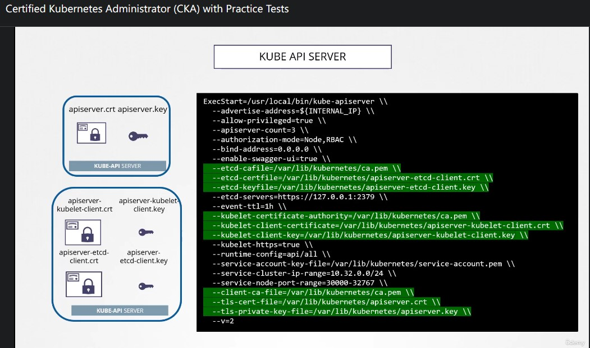
▲ 當啟動 apiserver 必須帶這些參數。
- 幫
etcd簽署的 Root-CA public key。 apiserver-etcd-clientkey pair (包含 public key + private key)。註:apiserver作為 client 端，去跟etcd server請求時的身分驗證。- 幫
kubelet簽署的 Root-CA public key。 apiserver-kubelet-clientkey pair (包含 public key + private key)。註:apiserver作為 client 端，去跟kubelet請求時的身分驗證。- 幫 client 簽署的 Root-CA public key。
apiserver自身 key pair (包含 public key + private key)。
[TLS] 總結
- 所有證書類型所需，在 Kubernetes 官方 document 都有: PKI certificates and requirements#All certificates。
- 筆記沒有把所有證書一一列出，請參考本章節一開始的 diagram 並搭配官方 docs。
問問筆記
各位下午好，想請教一下為什麼這篇 docs 當中沒有提到 kube-proxy 要使用到的 TLS certificate 呢? https://kubernetes.io/docs/setup/best-practices/certificates/
在 #Configure certificates for user accounts 也只有提到這四個:
admin(Administrator User)kubeletcontroller-managerscheduler
我是參考這張圖
Hwchiu@CNTUG
因為現在大部分 kube-proxy 都不再是個單獨安裝的應用程式，不會像 kubelet 一樣要獨立安裝，更多是透過 daemonset 去部署 kube-proxy。
這種情況下，可以用 serviceaccount + secret 來管理這個 daemonset 裡面的權限以及要用到的ca.crt。
me: 算是 kubeadm 的版本異動囉?
我不確定哪個版本，不過應該非常早期的kubeadm就不需要獨立安裝kube-proxy
非常早期的k8s hard way 教你一步一步安裝的話，就會要你弄這些全部
現在kubeadm 你會發現基本上你只有本地用systemd 來管 kubelet
後面就k8s pod 起來了
me: 我想先確定一下我對整個 flow 的觀念有沒有正確，src 當作通訊發起方； dst 當作接收方
單向:
- src:
kube-scheduler, dst:api-server。(kube-scheduler => api-server) - src:
controller-manager, dst:api-server。(controller-manager => api-server)
雙向:
- src/dst:
kubelet, src/dst:api-server。 (kubelet <=> api-server)
@CNTUG
對，方向沒錯。
143. View Certificate Details
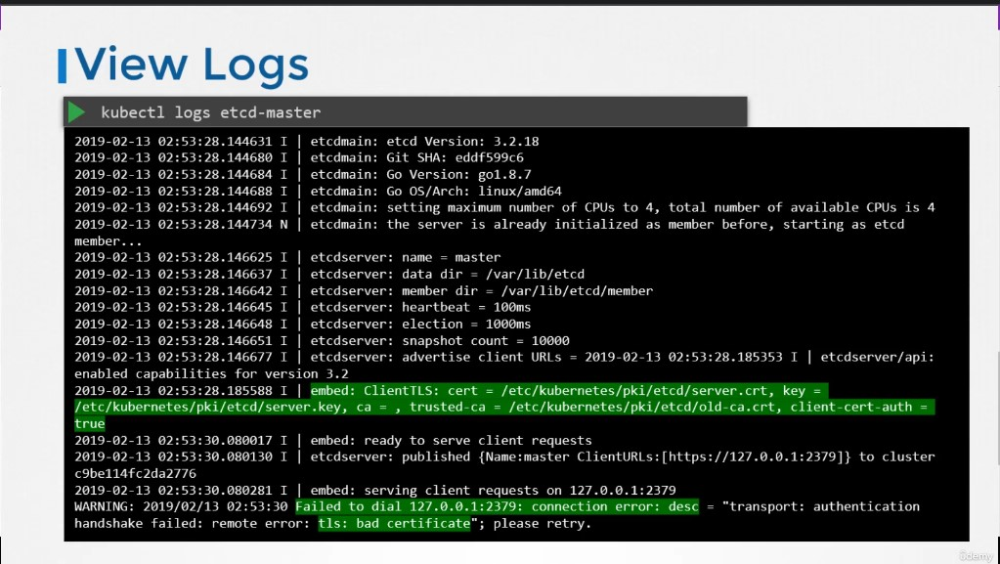
▲ 如果是透過 kubeadm 安裝的話，各個 component 都是使用 static pod 建立的，使用 kubectl logs <component_pod_name> 即可查看 logs。
[推薦] 如果 kubectl 沒辦法使用的話也能透過 docker logs <component_pod_name> or podman logs <component_pod_name> 檢視。
146. Certificates API
如果要新增一名新的 kubernetes cluster admin，就必須讓新人自行產生 RSA key pair 後產生 .csr (certificate signing request) 然後登入到 control plane 使用 ca.key 對 .csr 簽署後變成 .crt 交給新人。
|
|
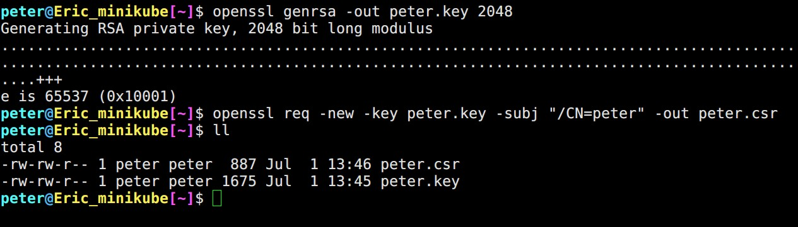
▲ 使用 openssl 產生 peter.csr
這個手動的方法非常不方便，而且費時! 所以 Kubernetes control plan 有一項協助我們簽署證書的 API: certificate API
透過 CSR object 原先的 cluster admin 就能很輕鬆地的 (1) View request (2) Approve Request (3) Share certs to user
把剛才產生的 peter.csr 以 base64 encode 之後填入 .spec.request (註: tr -d "\n" 刪除換行符號)
|
|
|
|
[kubernetes.io] Certificate Signing Requests
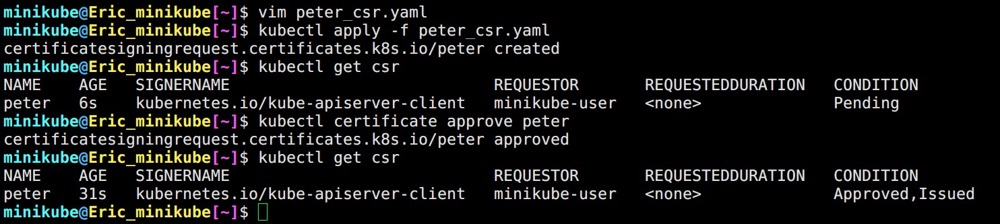
▲ 產生 CSR object，與產生其它 resource 一樣。只不過沒辦法使用 kubectl create csr .... -o yaml 來獲取 YAML teamplete。
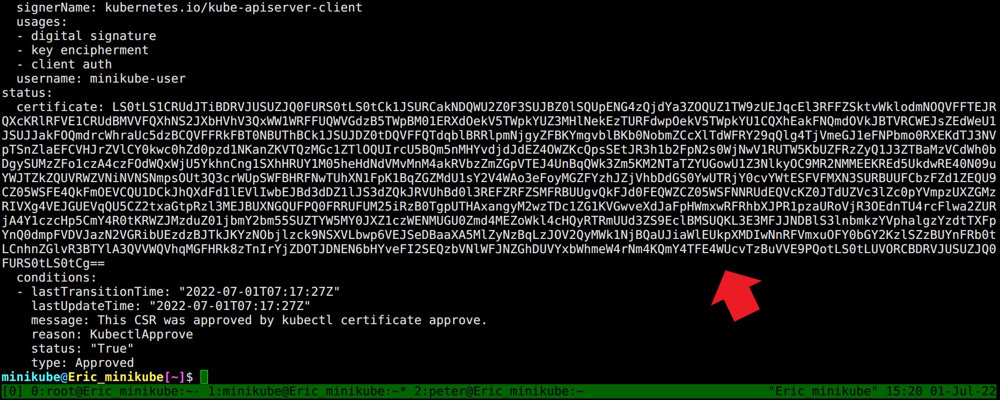
▲ 使用 kubectl get csr/peter -o yaml 上圖這串即是 peter 的憑證。 不過一樣被經過 base64 encode 必須自行手動 decode
讓自己輕鬆一點 kubectl get csr peter -o jsonpath='{.status.certificate}'| base64 -d > peter.crt
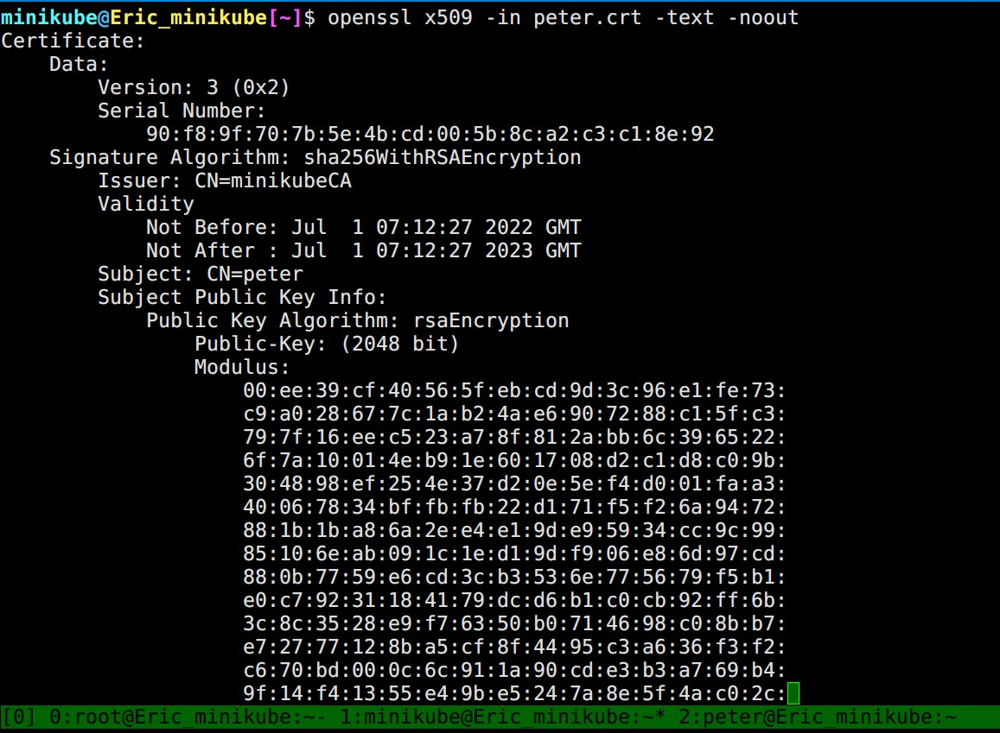
▲ 以 openssl x509 -in peter.crt -text -noout 查看證書內容。
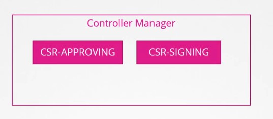
▲ CSR 分別由 control manager 裡面的 CSR-APPROVING 與 CSR-SIGNING 負責。
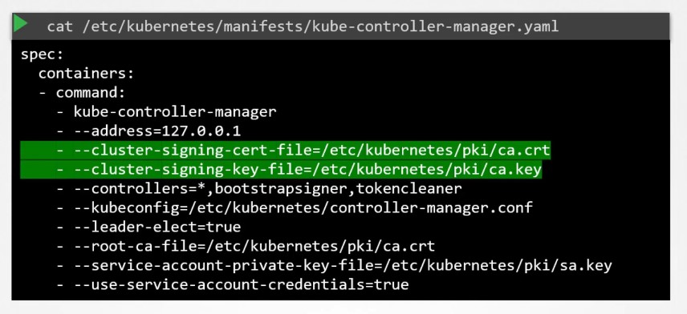
▲ .csr 由哪個 ca key 簽章在 control manager config 裡面設定。 [kubernetes.io] kube-controller-manager
159. Image Security
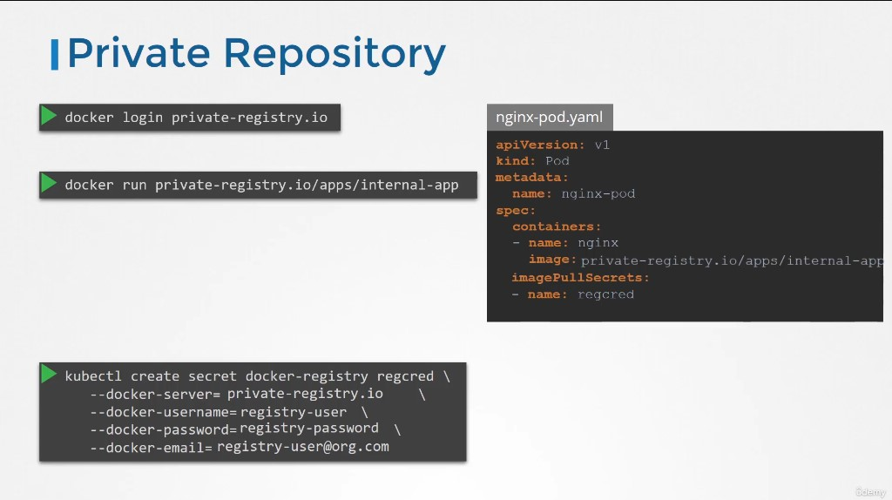
▲ 如果要使用 private image repository 就必須告訴 K8s 你的帳號密碼，這樣 worker node 才能拉到。並且在 pod.spec.imagePullSecrets[] 給定使用哪個 secret
Author
LastMod 2022-08-03 (13ba6cd)